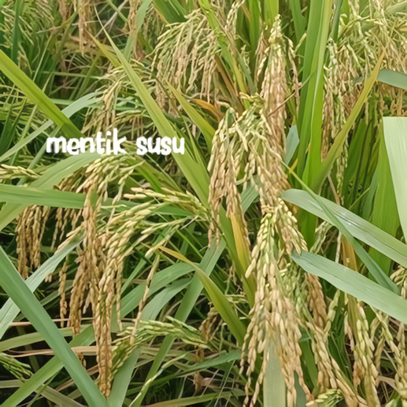

Sehat, Organik, dan Ramah Pencernaan

Putih Susu
Sangat Pulen
Rendah Gula
Bayi & Lansia
Mentik Susu menghasilkan beras yang warnanya unik, putih pekat mirip susu. Varietas ini adalah hasil seleksi alam dari benih padi lokal yang dibudidayakan dengan metode organik.
Kelebihan utamanya adalah indeks glikemik yang rendah. Teksturnya yang sangat lembut menjadikannya pilihan favorit untuk MPASI bayi atau dikonsumsi oleh penderita diabetes yang membutuhkan asupan karbonhidrat lebih terkontrol.
⬅ Kembali ke Daftar Padi